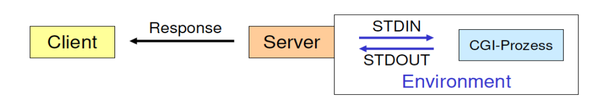

Vorlesung 1 - Einführung
 29.03.2021
29.03.2021
A new Beginning...
Ein neues Jahr, ein neues Semester, eine neue Vorlesung. Das Thema dieses Mal:
Verteilte Systeme
Die Themen beinhalten:
- Dynamik im Web: serverseitige Technologien
- Streams und Netzwerkkomunikation mit Java
- Serverseitige Programmierung mit JavaScript und Web Frameworks
- (Serverseitige Programmierung von hybriden und progressiven Web Apps für mobile Endgeräte mit Android und iOS)
Let's go
Wir begannen die Vorlesung nun erst einmal mit einem groben Überblick über das Themengebiet (siehe oben).
Darufhin folgte eine etwas längere Geschichtsstunde zum Theme Client-Server Kommunikation und Netzwerkkomunikation. Das vollständige Auflisten der besprochenen Inhalte
spare ich mir an dieser Stelle (ich weiß - gerade erst angefangen schon wird mit dem Sparen angefangen), da diese lediglich einer Wiederholung der Vorlesungen Kommunikationssysteme
und Programmierung II des vorletzten Semesters darstellen.
Daraufhin gab es eine kurze Auffrischung zum Thema Web-Anwendungen und client-seitige Technologien (wo wird was gerendert etc.). Die Themen beschränkten sich dabei auf bereits im letzten Semester behandelte Inhalte.
Danach ging es mit Neuem los.
Serverseitige Technologien
CGI
Angefangen mit CGI. Das Akronym lässt sich leicht mit dem ähnlich gebräuchlichen Begriff "Computer Generated Imagery" ergo special effects in Filmen verwechseln, bedeutet hier aber schlichtweg "Common Gateway Interface". Warum das so ist sieht man an der Funktionsweise. Bei statischen Seiten greift ein Client auf einen Server zu und "holt sich" den Inhalt einer Seite. Will man nun von der Server Seite aus Dynamik in die Site bringen muss auf dem Server irgend etwas verarbeitet werden. Im Falle von CGI startet der CGi-Server, wenn eine CGI-Url erkannt wird einen CGI-Prozess und übernimmt die Kommunikation zwischen dem lokalen Prozess bzw. Programm und dem Client. Deswegen wird er als "Gateway" bezeichnet.
Diese Vorgehensweise erlaubte es CGI-Anwendungen in praktisch allen Programmiersprachen zu erstellen, barg aber auch hohe Risiken. Immerhin konnten so teilweise anonyme Benutzer Prozesse auf einem business kritischem System ausführen. Das schreit geradezu nach "remote code execution" - wenn die Rechteverwaltung nicht minutiös überwacht wurde.
PHP
PHP ist eine Skriptsprache und heißt ausgeschrieben "Hypertext Preprocessor". Damit wäre auch sehr treffend beschrieben was PHP macht. PHP Skripte erlauben es beim Laden einer Seite dynamisch Inhalte zur
Verfügung zu stellen in dem die Auführung eines Skriptes angestoßen wird und dieses Skript dann HTML an den Web Server zurückgibt.
PHP ist sehr weit verbreitet - dies ist vor allem der hohen Anzahl an CMS (Content Management Systemen) zu verdanken. Ein Beispiel dafür ist Joomla. Dieses ist in Artikel organisiert, welche in einer Datenbank liegen.
Wenn nun eine Seite aufgerufen wird, führt der PHP-Server das Skript der Seite aus, fragt den Artikel in der MySQL Datenbank ab und liefert den HTML Quellcode der nun vollständigen Seite zurück.
Java Servlets & JSP
Die letzte in dieser Vorlesung besprochene serverseitige Technologie ist Java und die verschiedenen Arten wie es eingesetzt wurde.
Was Java ist und wie die Sprache grunsätzlich arbeitet (Quellcode -> Bytecode -> Maschinencode) spare ich mir an dieser Stelle und springe direkt zu den Einsatzmöglichkeiten.
Zum einen gab es die sogenannte "Java Applets". Das waren schlichtweg in eine Seite eingebette Java Programme - vergleichbar mit Flash Spielen wenn man so will.
Dann gab es noch "Java Servlets". Das Skript bezeichnet sie als "CGI auf 'Java-Art'". So kann man das denke ich beschrieben.
Last but not least gab es noch "Java Server Pages" (JSPs) die Servlets etweiterten und ein Erstellen von Websites erlaubten die statischen und dynamischen Inhalt mischten.
Streams und Netzwerkkomunikation in Java
Im zweiten Teil der Vorlesung haben wir mit dem nächsten großen Thema begonnen. Wir haben uns Streams angeschaut. Grundsätzlich geht es dabei um das Speichern, Abglegen und anschließende Laden von Objekten und Zuständen.
Diese Vorgänge nennt man Serialisieren und Deserialisieren. Innerhalb Java regeln das der FileInputStream und FileOutputStream in Kombination mit dem ObjectInputStream und dem ObjectOutputStream.
Die Namen sprechen an dieser Stelle für sich. Die Filestreams kümmern sich um die Kommunikation mit dem Dateisystem, während die ObjectStreams die Objekte zerstückeln und wieder zusammensetzen.
Gegen Ender der Vorlesung kamen wir nun nochmal zu etwas Praktischem. Wir sollten anhand einer vorgegebenen Klasse Spielfigur und SpielSpeicherungTest noch eine Klasse Team schreiben.
Dieses "Team" sollten wir dann analog zu den vorgegebenen Spielfiguren abspeichern, die Referenz auf das Objekt löschen und das Objekt wieder laden.
Der Quellcode für die Klassen sah am Ende folgendermaßen aus:
// Spielfigur.java
import java.io.Serializable;
public class Spielfigur implements Serializable {
/**
*
*/
private static final long serialVersionUID = -6766019629921238076L;
private int stärke;
private String typ;
private String[] waffen;
public Spielfigur(int s, String t, String[] w){
this.stärke = s;
this.typ = t;
this.waffen = w;
}
public int getStärke(){
return stärke;
}
public String getTyp(){
return typ;
}
public String getWaffen(){
String waffenListe = "";
for (int i = 0; i < waffen.length; i++){
waffenListe += waffen[i] + " ";
}
return waffenListe;
}
}
// Team.java
import java.io.Serializable;
public class Team implements Serializable {
/**
*
*/
private static final long serialVersionUID = -5366467571771762596L;
private Spielfigur[] spielfiguren;
public Team(Spielfigur[] figuren){
this.spielfiguren = figuren;
}
public Spielfigur[] getSpielfiguren(){
return spielfiguren;
}
}
// SpielSicherungsTest.java
import java.io.FileInputStream;
import java.io.FileOutputStream;
import java.io.IOException;
import java.io.ObjectInputStream;
import java.io.ObjectOutputStream;
public class SpielSicherungsTest {
public static void main(String[] args){
Spielfigur figur1 = new Spielfigur(50, "Elb", new String[]{"Bogen", "Schwert", "Staub"});
Spielfigur figur2 = new Spielfigur(200, "Troll", new String[]{"bloße Hände", "große Axt"});
Spielfigur figur3 = new Spielfigur(120, "Zauberer", new String[]{"Zaubersprüche", "Unsichtbarkeit"});
Team meinTeam = new Team(new Spielfigur[]{figur1, figur2, figur3});
// Figuren serialisieren
try {
ObjectOutputStream os = new ObjectOutputStream(new FileOutputStream("Spiel.ser"));
os.writeObject(figur1);
os.writeObject(figur2);
os.writeObject(figur3);
os.close();
} catch(IOException e) {
e.printStackTrace();
}
// Referenzen auf die Figuren löschen löschen
figur1 = null;
figur2 = null;
figur3 = null;
// Figuren wieder einlesen
try {
ObjectInputStream is = new ObjectInputStream(new FileInputStream("Spiel.ser"));
Spielfigur figur1Wiederhergestellt = (Spielfigur) is.readObject();
Spielfigur figur2Wiederhergestellt = (Spielfigur) is.readObject();
Spielfigur figur3Wiederhergestellt = (Spielfigur) is.readObject();
System.out.println("Typ 1. Figur: " + figur1Wiederhergestellt.getTyp());
System.out.println("Typ 2. Figur: " + figur2Wiederhergestellt.getTyp());
System.out.println("Typ 3. Figur: " + figur3Wiederhergestellt.getTyp());
is.close();
} catch (Exception e) {
e.printStackTrace();
}
// Team serialisieren
try {
FileOutputStream fs = new FileOutputStream("Team.ser");
ObjectOutputStream os = new ObjectOutputStream(fs);
os.writeObject(meinTeam);
os.close();
} catch (IOException e) {
e.printStackTrace();
}
// Verweis auf team löschen
meinTeam = null;
// Team neu einlesen
try {
ObjectInputStream is = new ObjectInputStream(new FileInputStream("Team.ser"));
Team meinTeamWiederhergestellt = (Team) is.readObject();
for (int i = 0; i < meinTeamWiederhergestellt.getSpielfiguren().length; i++){
System.out.println(meinTeamWiederhergestellt.getSpielfiguren()[i].getTyp());
}
is.close();
} catch (Exception e) {
e.printStackTrace();
}
}
}
Damit endete diese Vorlesung.